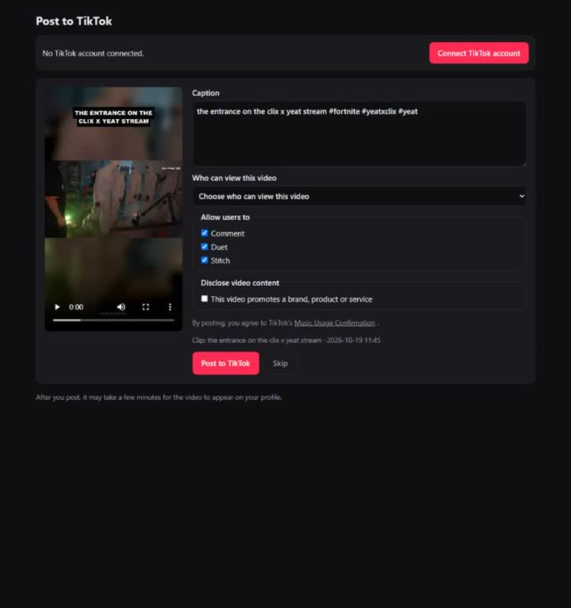
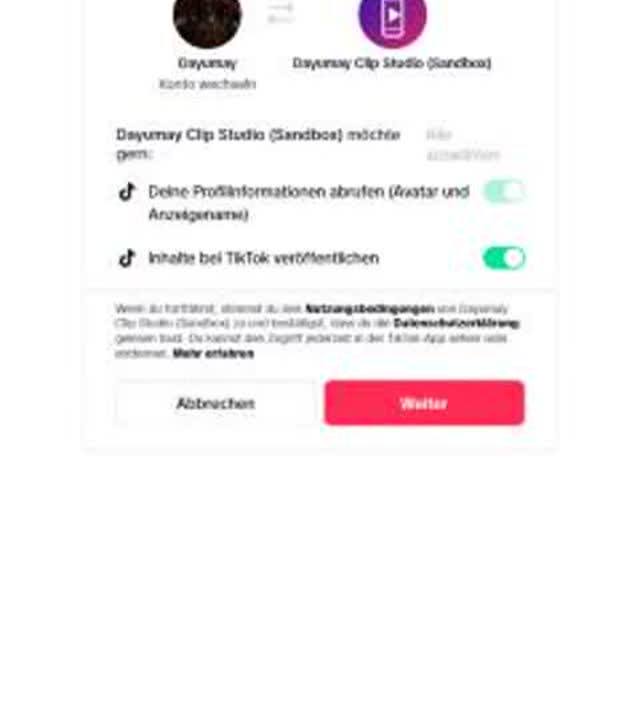

Dayumay Clip Studio
Turn approved livestream highlights into clean vertical shorts – and publish them to your own TikTok, YouTube and Instagram accounts with full control over every post.
Features
Finds the best moments
Scans approved stream clips and official campaign footage for the strongest moments – loudness, speech and scene changes – instead of random cuts.
Vertical 9:16 editing
Cuts on natural scene and sentence edges, keeps the streamer's facecam large, adds readable captions and the required credit.
Safety check
Every clip is checked before posting. Clips with unsafe content or misleading titles are rejected automatically.
Campaign rules built in
Required captions, hashtags, disclosures (#Ad) and logos of each clipping campaign are applied exactly as the brand asks.
You confirm every TikTok post
The posting screen shows your account, the video and caption. You choose who can view it and the interaction settings, then confirm.
Your accounts only
The tool publishes only to the accounts its owner connects. No viewer data is collected and nothing is shared with third parties.
How it works
- Join a clipping campaign. Streamers and game publishers allow and pay for clips of their content.
- Clip Studio prepares the shorts. It downloads only the approved source material and renders vertical videos.
- Connect your accounts. Sign in with TikTok (Login Kit), Google (YouTube Data API) and Instagram. Tokens stay on the owner's computer.
- Review and publish. On the posting screen you check each video and caption, pick the privacy level and confirm. Only then is the video sent through the TikTok Content Posting API.
Screenshots


Supported platforms
- TikTok – Content Posting API
- YouTube Shorts – YouTube Data API v3
- Instagram Reels – Instagram API
FAQ
Who can use Dayumay Clip Studio?
It is a personal tool run by its owner for the owner's own creator accounts. It does not offer sign-ups to other people.
Does it post without my approval?
No TikTok video is published without the owner reviewing it on the posting screen and confirming. The owner chooses the privacy level for every post.
Which content is used?
Only footage the rights holder allows for clipping, such as official campaign folders and the streamer's own clips, always with the required credit.
What data is stored?
Only the access tokens needed to publish to the connected accounts, stored locally on the owner's computer. See the Privacy Policy.
How do I disconnect an account?
Revoke access in your TikTok, Google or Instagram security settings at any time; the local token stops working immediately.
Contact
Questions about Dayumay Clip Studio: message the owner on GitHub – github.com/dayumay.